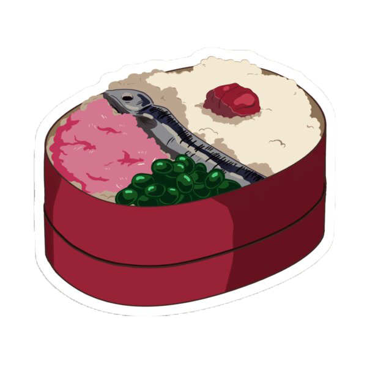

Bento
Ingredientes
- 1 taza de arroz blanco cocido
- 1 Umeboshi
- 1 Shishamo
- 1 cucharada de aceite
- Un punado de edamame congelado
- 1 cucharada de sakura denbu

Instrucciones
-
Coloque arroz cocido en su caja bento aproximadamente a 3/4 de su capacidad (deje algo de
espacio en la parte superior para los ingredientes y para poder tapar).
-
Toma 1 umeboshi y ponlo a un lado del arroz.
-
En una sartén pequeña, calienta el aceite a fuego medio-alto. Cocine un shishamo por ambos
lados hasta que esté cocido.
-
Coloque el shishamo cocido en el centro de la caja bento sobre el arroz.
-
Hervir agua en una olla pequeña. Agregue un puñado de edamame congelado y cocine según las
instrucciones del paquete.
-
Una vez cocidos, saca los frijoles edamame de la vaina. Colóquelos sobre el arroz para
llenar un poco menos de una cuarta parte de la caja bento, debajo del shishamo.
-
Espolvorea sakura denbu sobre el arroz junto al edamame.
-
¡Disfrútalo cuando sea la hora del almuerzo!